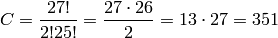

This may be the first real working session.
First I will calculate summary statistics for every feature across the whole data set. That leads to the abandoning of three features that turns out to be 0 in all rows.
from json import dump
from src.data_interface import trd, L
from src.utils import get_path
sess_root = get_path(__file__) + '/../scr'
summary_statistics = ['min', 'max', 'mean', 'std']
features_to_calculate = L[2:]
calculations = {}
for feature_name in features_to_calculate:
calculations[feature_name] = {}
for statistic in summary_statistics:
stat_function = getattr(trd.get_feature(feature_name), statistic)
calculations[feature_name][statistic] = stat_function()
f = open(sess_root + '/summary_statistics.json', 'w')
dump(calculations, f, indent=4)
f.close()
{
"E11": {
"std": 5.3680706118227475,
"max": 52.399999999999999,
"mean": 1.3680270856644134,
"min": 0.0
},
"E10": {
"std": 19.225848177569208,
"max": 127.0,
"mean": 63.383606720123765,
"min": 0.0
},
"IsAlert": {
"std": 0.49274173218481437,
"max": 1.0,
"mean": 0.5848857194267667,
"min": 0.0
},
"V1": {
"std": 44.939454615930146,
"max": 129.69999999999999,
"mean": 75.578530060825912,
"min": 0.0
},
"V2": {
"std": 0.41552855405905609,
"max": 3.9900000000000002,
"mean": -0.042021962635219949,
"min": -4.7949999999999999
},
"V3": {
"std": 299.02466537837739,
"max": 1023.0,
"mean": 569.77905617958936,
"min": 240.0
},
"E9": {
"std": 0.33309600056184263,
"max": 1.0,
"mean": 0.87289013718632558,
"min": 0.0
},
"E8": {
"std": 1.6206071264874979,
"max": 9.0,
"mean": 1.3881465058127871,
"min": 0.0
},
"V6": {
"std": 626.26885909010286,
"max": 4892.0,
"mean": 1699.3444652877024,
"min": 0.0
},
"V7": {
"std": 0.0,
"max": 0.0,
"mean": 0.0,
"min": 0.0
},
"E5": {
"std": 0.0023483882165350172,
"max": 0.023938999999999998,
"mean": 0.016277118100601118,
"min": 0.0080000000000000002
},
"E4": {
"std": 34.801210476192722,
"max": 260.0,
"mean": -3.9919338659739445,
"min": -250.0
},
"E7": {
"std": 2.9524553169225811,
"max": 25.0,
"mean": 1.8105037610935195,
"min": 0.0
},
"E6": {
"std": 27.835399964819679,
"max": 513.0,
"mean": 358.5008200569593,
"min": 260.0
},
"E1": {
"std": 14.001419899514028,
"max": 243.99100000000001,
"mean": 10.541855237712753,
"min": 0.0
},
"E3": {
"std": 1.0327277679174485,
"max": 4.0,
"mean": 0.29839938945570144,
"min": 0.0
},
"E2": {
"std": 128.32653422852991,
"max": 359.995,
"mean": 105.04587853850168,
"min": 0.0
},
"P2": {
"std": 3.7374687342404909,
"max": 71.173699999999997,
"mean": 12.007656977416872,
"min": -45.629199999999997
},
"P3": {
"std": 309.70068902522655,
"max": 2512.0,
"mean": 1028.0000827295798,
"min": 504.0
},
"P1": {
"std": 7.3577113178289641,
"max": 101.351,
"mean": 35.452121895911311,
"min": -22.481200000000001
},
"P6": {
"std": 2795.3175086232773,
"max": 228812.0,
"mean": 843.72575971607205,
"min": 128.0
},
"P7": {
"std": 18.786148339301718,
"max": 468.75,
"mean": 78.396266502870134,
"min": 0.26222400000000001
},
"P4": {
"std": 19.764207622194103,
"max": 119.048,
"mean": 63.989796643430701,
"min": 23.885300000000001
},
"P5": {
"std": 0.38727852340161711,
"max": 27.202200000000001,
"mean": 0.1806010104838727,
"min": 0.038920000000000003
},
"P8": {
"std": 0.0,
"max": 0.0,
"mean": 0.0,
"min": 0.0
},
"V4": {
"std": 67.214163491853952,
"max": 484.488,
"mean": 21.23810942205775,
"min": 0.0
},
"V8": {
"std": 11.540861639690451,
"max": 82.099999999999994,
"mean": 12.456263973539082,
"min": 0.0
},
"V9": {
"std": 0.0,
"max": 0.0,
"mean": 0.0,
"min": 0.0
},
"V5": {
"std": 0.38274668403308171,
"max": 1.0,
"mean": 0.17827810789178145,
"min": 0.0
},
"V10": {
"std": 1.2665512523830937,
"max": 7.0,
"mean": 3.2767159666020689,
"min": 1.0
},
"V11": {
"std": 8.4293128281527228,
"max": 262.45499999999998,
"mean": 11.587314729464051,
"min": 1.6767300000000001
}
}
As can be seen the result is saved to a json data file. What is worth noticing...
- P8, V7, V9 is zero in all rows and can be discarded
- V5, E9 could be binary
- It looks like a little over half the time the drivers is alert... hmm... a little less than expected
To continue the exploration I wil try to calculate how many different values the various features span. That is done in a simple script
from json import dump
from src.data_interface import trd, L
from src.utils import get_path
sess_root = get_path(__file__) + '/../src'
features_to_calculate = L[2:]
unique_values = {}
for feature_name in features_to_calculate:
unique_values[feature_name] = trd.get_feature(feature_name).unique_values()
f = open(sess_root + '/unique_values.json', 'w')
dump(unique_values, f, indent=4)
f.close()
{
"E11": 116,
"E10": 121,
"IsAlert": 2,
"V1": 12374,
"V2": 90,
"V3": 33,
"E9": 2,
"E8": 10,
"V6": 2727,
"V7": 1,
"E5": 254,
"E4": 249,
"E7": 25,
"E6": 247,
"E1": 12265,
"E3": 3,
"E2": 28502,
"P2": 128666,
"P3": 406,
"P1": 105715,
"P6": 406,
"P7": 406,
"P4": 406,
"P5": 1070,
"P8": 1,
"V4": 324,
"V8": 323,
"V9": 1,
"V5": 2,
"V10": 5,
"V11": 166455
}
And what do we get? A couple of things
- V5 and E9 are binary
- E3 has 3 levels and V10 has 5 levels. That ain’t that many and could be interesting to look closer into
- 20 (not counting the three features with only one unique value) of the features have under 500 unique values, which actually surprises me a bit
- P3 and P4 has exactly the same number of unique values. The same is true for P6 and P7. There also exists a couple of groups with almost the same number of unique values: (E10, E11), (E4, E5, E6) and (V4, V8)
Somehow the number of unique values for the different features seems interesting. The next thing to test how many unique values a feature assumes within a single trial. A script is created that for every feature and every trial calculates the number of unique values. The script is
from json import dump
import numpy as np
from src.data_interface import trd, L
from src.utils import get_path
sess_root = get_path(__file__) + '/..'
features_to_calculate = L[2:]
trials = list(trd.trial_id_list)
calculations = {}
for feature_name in features_to_calculate:
tmp = {"trial_results": {}}
for trial_id in trials:
unique_values = np.unique(
trd.get_trial(trial_id).get_feature(feature_name).view())
tmp["trial_results"][trial_id] = unique_values.size
tmp["max"] = max(tmp["trial_results"].values())
tmp["min"] = min(tmp["trial_results"].values())
calculations[feature_name] = tmp
f = open(sess_root + '/src/unique_values_pr_trial.json', 'w')
dump(calculations, f, indent=4)
f.close()
The data is a bit to large to show here (about 15000 lines), so another script extracts the maximum unique values pr. trial for each feature and combines it with the number of unique values over the whole data set. The result is
{
"E11": {
"min_pr_trial": 1,
"all_data": 116,
"max_pr_trial": 79
},
"E10": {
"min_pr_trial": 1,
"all_data": 121,
"max_pr_trial": 86
},
"IsAlert": {
"min_pr_trial": 1,
"all_data": 2,
"max_pr_trial": 2
},
"V1": {
"min_pr_trial": 1,
"all_data": 12374,
"max_pr_trial": 969
},
"V2": {
"min_pr_trial": 1,
"all_data": 90,
"max_pr_trial": 76
},
"V3": {
"min_pr_trial": 1,
"all_data": 33,
"max_pr_trial": 29
},
"E9": {
"min_pr_trial": 1,
"all_data": 2,
"max_pr_trial": 2
},
"E8": {
"min_pr_trial": 1,
"all_data": 10,
"max_pr_trial": 10
},
"V6": {
"min_pr_trial": 1,
"all_data": 2727,
"max_pr_trial": 775
},
"V7": {
"min_pr_trial": 1,
"all_data": 1,
"max_pr_trial": 1
},
"E5": {
"min_pr_trial": 1,
"all_data": 254,
"max_pr_trial": 134
},
"E4": {
"min_pr_trial": 1,
"all_data": 249,
"max_pr_trial": 97
},
"E7": {
"min_pr_trial": 1,
"all_data": 25,
"max_pr_trial": 15
},
"E6": {
"min_pr_trial": 1,
"all_data": 247,
"max_pr_trial": 116
},
"E1": {
"min_pr_trial": 1,
"all_data": 12265,
"max_pr_trial": 131
},
"E3": {
"min_pr_trial": 1,
"all_data": 3,
"max_pr_trial": 3
},
"E2": {
"min_pr_trial": 1,
"all_data": 28502,
"max_pr_trial": 129
},
"P2": {
"min_pr_trial": 1155,
"all_data": 128666,
"max_pr_trial": 1207
},
"P3": {
"min_pr_trial": 24,
"all_data": 406,
"max_pr_trial": 106
},
"P1": {
"min_pr_trial": 967,
"all_data": 105715,
"max_pr_trial": 1208
},
"P6": {
"min_pr_trial": 3,
"all_data": 406,
"max_pr_trial": 99
},
"P7": {
"min_pr_trial": 3,
"all_data": 406,
"max_pr_trial": 99
},
"P4": {
"min_pr_trial": 24,
"all_data": 406,
"max_pr_trial": 106
},
"P5": {
"min_pr_trial": 34,
"all_data": 1070,
"max_pr_trial": 114
},
"P8": {
"min_pr_trial": 1,
"all_data": 1,
"max_pr_trial": 1
},
"V4": {
"min_pr_trial": 1,
"all_data": 324,
"max_pr_trial": 204
},
"V8": {
"min_pr_trial": 1,
"all_data": 323,
"max_pr_trial": 239
},
"V9": {
"min_pr_trial": 1,
"all_data": 1,
"max_pr_trial": 1
},
"V5": {
"min_pr_trial": 1,
"all_data": 2,
"max_pr_trial": 2
},
"V10": {
"min_pr_trial": 1,
"all_data": 5,
"max_pr_trial": 5
},
"V11": {
"min_pr_trial": 875,
"all_data": 166455,
"max_pr_trial": 1206
}
}
This did not create that many interesting results. A few things can be commented
- P3 and P4 continues to have an equal number of unique values and so do P6 and P7
- On the contrary the three groups (E10, E11), (E4, E5, E6) and (V4, V8) seems to have been separated more by the per trial count.
Now an interesting thing to notice is the feature V10. It has 5 unique values also when we calculate pr. trial. What are these 5 different values
import numpy as np
from src.data_interface import trd
np.unique(trd.V10.view())
Gives the following result
array([ 1., 2., 3., 4., 7.])
Note
Could V10 be the gear? Maybe 7 is reverse?
Yet another thing to notice is the unique values of V3
>> np.unique(trd.V3.view())
array([ 240., 241., 242., 243., 244., 253., 254., 255.,
496., 497., 498., 499., 508., 509., 510., 511.,
752., 753., 754., 755., 756., 764., 765., 766.,
767., 1008., 1009., 1010., 1011., 1020., 1021., 1022.,
1023.])
They somehow seems to appear in groups of 3, 4 or 5: 240-244, 253-255, 496-499, 508-511, 752-756, 764-767, 1008-1011, 1020-1023
The features E9 and V5 are binary. I will try to see if they are in any way correlated to the IsAlert feature. A quick way to test it, is to calculate a new feature given as the distance between the feature (E9/V5) and IsAlert. The mean value of the calculated feature gives a hint about a possible correlation.
from numpy import abs
from src.data_interface import trd
>> diffE9 = abs(trd.E9.view() - trd.IsAlert.view())
>> diffE9.mean()
0.3071811343466328
>> diffV5 = abs(trd.V5.view() - trd.IsAlert.view())
>> diffV5.mean()
0.53159132414897114
It actually looks as if E9 might be a good feature for the classifier
Before I talked about the possibility that V10 is the gear placement. Can I test my idea in any way? Well it depends... First of all let’s say that it is the gear. Then it could be an automatic gear or it could be a manual gear. Does it matter? If it is manual, you could hypothesise that if the gear level is changing the driver is somehow alert. It takes a little attention to manually change gear. On the other hand if the gear is automatic, it requires no attention to change it. But if it is automatic and it changes rapidly, the driver is probably accelerating. Maybe he is breaking because he was inattentive a moment ago. What do I get from all this? If the gear level has been constant for some time the probability of an inattentive driver increases... Sounds ok...
It is now time for the big correlation hunt which means I have to plot way to many scatter plots. More precisely there are 27 features and I like to create scatter plots of all pairs of features. This gives a total of

Which isn’t totally unmanagable... But how should I select which rows are included? There should probably only be between 50 and 100 rows in one scatter plot, and I would like about an equal number of rows with IsAlert=0 and IsAlert=1. Should the rows come from the same trial? And if they are from different trials shouldn’t I normalize the features first. Speaking of normalization... I will try to normalize the features. Read more